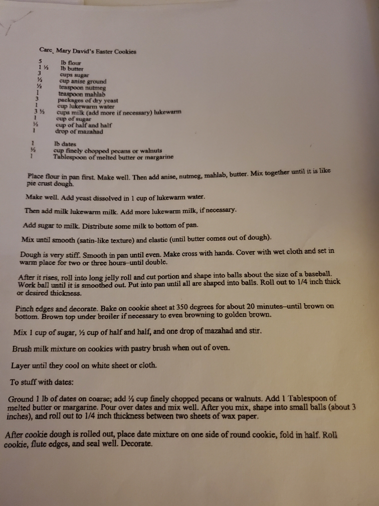

Lebanese ma'amoul-style Easter cookies — spiced anise dough stuffed with dates, pecans, and walnuts, glazed hot from the oven
Section
Syrian-Lebanese
Source
Mary David
Bake
350°F · ~20 min
Yield
Large batch (5 lb dough)
Ingredients
Dough
5 lb flour
1½ lb butter
3 cups sugar
½ cup ground anise
½ tsp nutmeg
1 tsp mahlab
3 packages dry yeast, dissolved in 1 cup lukewarm water
3½ cups lukewarm milk
½ cup half and half
1 drop mazahad
Date Filling
1 lb dates, coarsely ground
½ cup pecans or walnuts, finely chopped
1 Tbsp butter or margarine, melted
Glaze
1 cup sugar
½ cup half and half
1 drop mazahad
Mazahad: A floral Lebanese flavoring (similar to rose water but more delicate). One drop goes a long way — don't overdo it.
Mahlab: Ground cherry pits — a classic Lebanese baking spice with a subtle almond-cherry flavor. Available at Middle Eastern grocers.
Original Recipe

Mary David's handwritten Easter cookie recipe
Directions
Dissolve yeast in 1 cup lukewarm water. Set aside to activate (about 5–10 minutes until foamy).
In a large bowl, work the butter into the flour with your hands, as if making a pie crust, until the mixture resembles coarse crumbs.
Warm the milk slightly. Add sugar, half and half, and mazahad to the milk and stir to dissolve.
Add the dissolved yeast to the flour mixture, then add the milk-sugar mixture. Mix until a soft dough forms. Knead until smooth and elastic.
Cover and let the dough rise in a warm place for 2–3 hours.
Make the filling: Combine ground dates, chopped nuts, and melted butter. Mix well.
Pinch off pieces of dough and roll into balls about the size of a baseball. Flatten and roll to about ¼ inch thickness.
Place a spoonful of date filling in the center. Fold the dough over the filling and pinch to seal. Shape into a round or oval, and press with a fork or cookie mold to flute the edges.
Place on ungreased baking sheets. Bake at 350°F for approximately 20 minutes, until just golden.
Glaze: Combine sugar, half and half, and mazahad in a small saucepan. Heat until sugar dissolves. Brush over cookies immediately while still hot.
Timing: These are a project — make the dough in the morning and let it rise. Filling and baking happens in the afternoon. Worth every step.
Glaze now: Brush the glaze on immediately when the cookies come out of the oven. The heat helps it soak in and creates the signature sheen.
Yield: With 5 lbs of dough, this makes a very large batch — perfect for holidays, gifts, and sharing with the whole family.